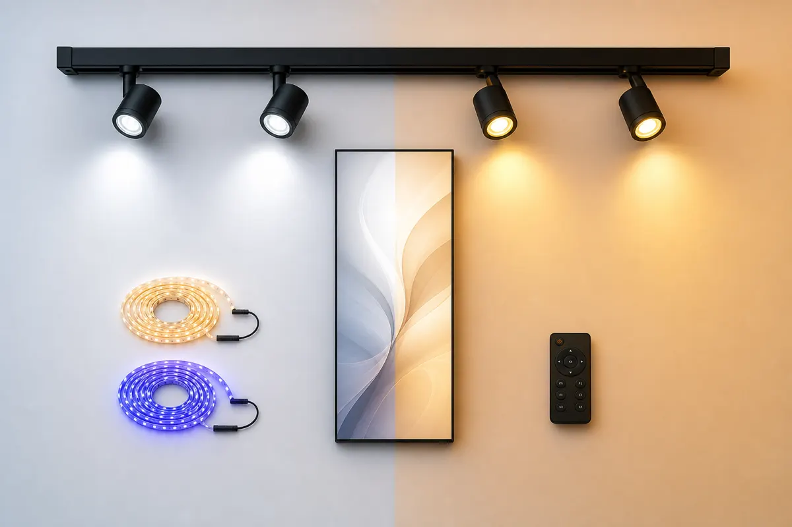
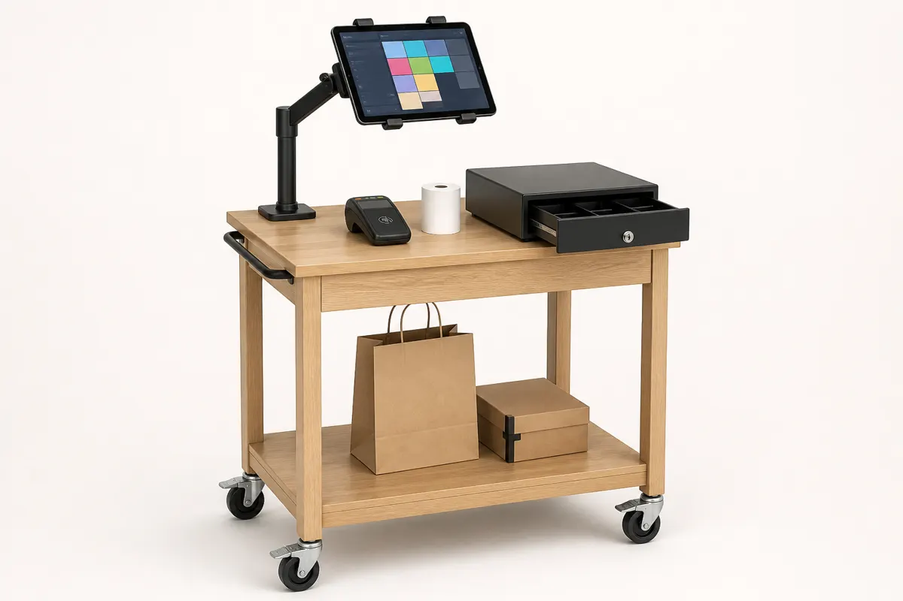

Devanture numérique
Bandeau LED d'enseigne et écran vitrine haute luminosité. L'identité visuelle du local change en un tap, sans enseigne physique à démonter.

Mur de casiers opérateurs
Stocks, matériel et consommables séparés par exploitant. Serrures connectées, bacs normés extractibles, pastilles de couleur pour identifier chaque section.

Étal escamotable
Même table, deux configurations : bureau de travail le jour, présentoir avec rehausse et bacs produits le soir. Chariot à bacs intégré sous le plateau.

Armoire Switch
Le cerveau technique du local : routeur multi-VLAN, hub réseau, tablette de pilotage, lecteur NFC et câblage centralisé derrière des portes coulissantes.

Kit DA & éclairage
Rail de spots orientables, bandeaux LED ambre/indigo, panneau mural slim. Deux ambiances préconfigurées, activables à la télécommande.

Station de caisse légère
Comptoir roulant compact, support tablette pivotant, TPE sans contact et tiroir-caisse. Se déplace et se range en 2 minutes.